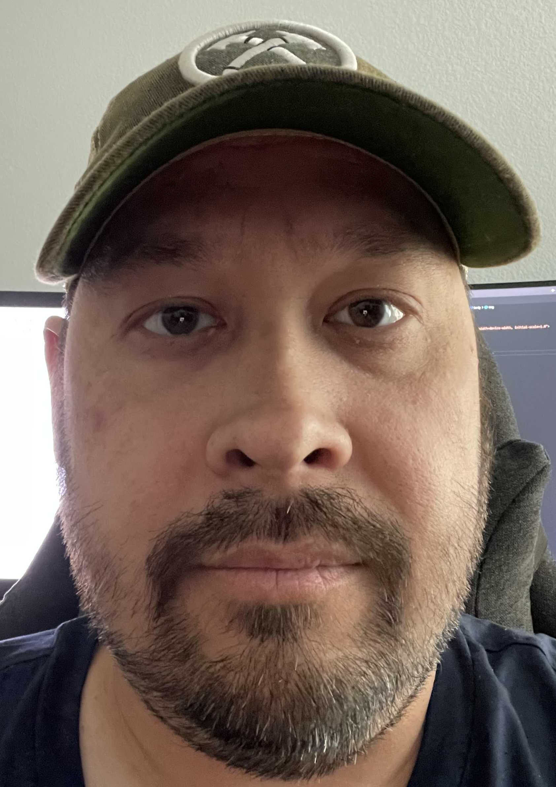

Gary Chew

Summary
I am a dillegent and hardworking individual with over 7 years of IT experience.
Education
Work Experience
-
IT Manager - Repairify Inc.
2017 - 2024
- Managed the architecture and administration of internal and external web platforms, ensuring optimal performance, security, and user experience.
- Led a team of 7 IT professionals in designing and managing digital content platforms, reducing troubleshooting time by 20%.
- Spearheaded integration of open-source applications, streamlining digital content delivery for the company’s website.
- Collaborated with cross-functional teams, providing web communication guidance and content architecture expertise, improving user engagement by 15%.
- Worked with external vendors and cloud providers (Azure) to optimize web hosting services, saving the company $100K annually.
-
Service Technician - Southwest Kia
2016-2017
- Performed vehicle maintenance and diagnostic repairs for customer vehicles.
- Conducted vehicle inspections for sales readiness and maintenance recommendations.
-
Service Technician - Huffines Hyundai Plano
2014 - 2016
- Conducted vehicle inspections and performed necessary repairs to ensure readiness for sale.
- Provided diagnostic services and maintenance recommendations for customer and used vehicles.
Skills
- Microsoft Windows 7/10/11
- Microsoft Windows Server 2016/2019/2022
- Microsoft Office 365
- Active Directory
- Azure
- Git
- HTML
- CSS
- Javascript
- React
Awards and Certifications
Other
© Gary Chew. All rights reserved.